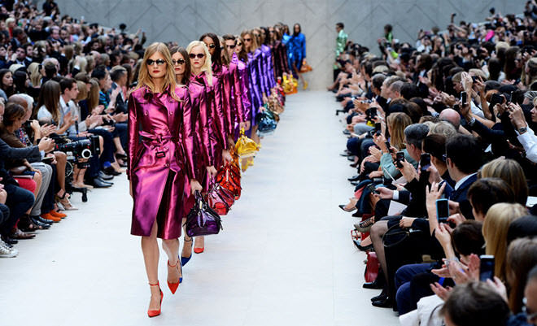
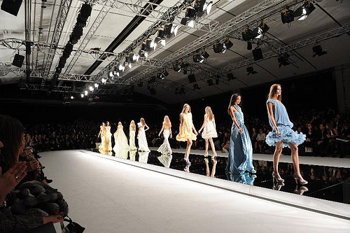

Del francés mode, una moda es un uso o costumbre que está en boga en determinada región durante un cierto periodo. Se trata de una tendencia adoptada por una gran parte de la sociedad, generalmente asociada a la vestimenta.
La moda puede ser definida como un mecanismo que regula las elecciones de las personas ya que, por una especie de presión social, indica a la gente qué debe consumir, utilizar o hacer. La moda se convierte en un hábito repetitivo que identifica a un sujeto o a un grupo de individuos.
Puede reflejarse en ciertos objetos o aspectos visibles (ropa, peinados, etc.), pero también en modos de actuar y comportamientos (escuchar un estilo de música, acudir a un cierto restaurante, ir de vacaciones a determinado destino).
LA INFLUENCIA DE LA MODA EN LA SOCIEDAD
La influencia de la moda en sí se refleja en la calle, en los medios, en las redes sociales, etc. Como se sabe, la moda es un negocio a nivel global, y también es algo que te caracteriza y forma parte de nuestra personalidad por los gustos que tienes al elegir las prendas.
La moda va cambiando constantemente y las tendencias se modifican, esto hace que todos los negocios de moda vayan sacando nuevas colecciones , y en el mundo la gente vaya comprando ropa que esté a la “moda”. El mundo de la moda es totalmente amplio, hay de todo y por ello el atuendo se vuelve parte de nuestra personalidad; ya que compras algo que realmente te guste y a la vez caracterice.
¿Qué es un desfile de moda?
Un escenario, asientos, luces, un backstage donde los maquilladores dan los últimos retoques a las modelos, un diseñador que mira cuidadosamente la caída del vestido que creó con tanta pasión. Un regidor da una señal a la modelo que abre el desfile. Ella sale en escena. Comienza el espectáculo. Nos encontramos en un desfile de moda.


Y ¿qué es un desfile de moda? Es una herramienta de marketing o medio de comunicación, por el cual un diseñador de moda da a conocer su colección.
Para el diseñador, el desfile es su imagen de marca; por ello la importancia de elegir un formato de desfile planificado hasta el último detalle con sumo cuidado y profesionalidad; además debe definir la filosofía de la firma. El desfile es un formato abierto y cambiante.
Es recomendable la creación de formatos sencillos para los diseñadores amateur donde las prendas sean las protagonistas y el espectáculo pase a segundo plano. También es de sumo cuidado evitar desfiles con colecciones de contenido pobre; ya que pueden llegar a ser muy perjudiciales para la imagen del diseñador.
Y ¿quiénes son el público objetivo en un desfile? Destaca la prensa, la cual tiene un papel importante debido a que es la encargada de mostrar y comentar las colecciones en revistas y periódicos especializados, además de fijarse en las prendas que podrán ser usadas para futuras editoriales de moda. Pero también entre el público se encuentran amigos de la marca, famosos, clientes y compradores.
¿Cuándo y dónde se llevan a cabo? Los desfiles se celebran dos veces al año; concretamente en los meses de enero- febrero y en septiembre- octubre. En los meses de otoño se presentan las colecciones de alta costura y prèt-à-porter de la temporada primavera-verano del siguiente año, y en primavera se presentan las de otoño-invierno.
Las ciudades elegidas son las capitales de moda por excelencia entre ellas Nueva York, Londres, Milán y París donde existe una gran cobertura mediática; pero también ciudades como Copenhague, Berlín o Sidney muestran desfiles dirigidos sobre todo para publicaciones más independientes.
En conclusión, un desfile de moda es un excelente medio por el cual un diseñador muestra sus creaciones, su imagen, su firma; en definitiva se muestra a sí mismo.
.jpg)